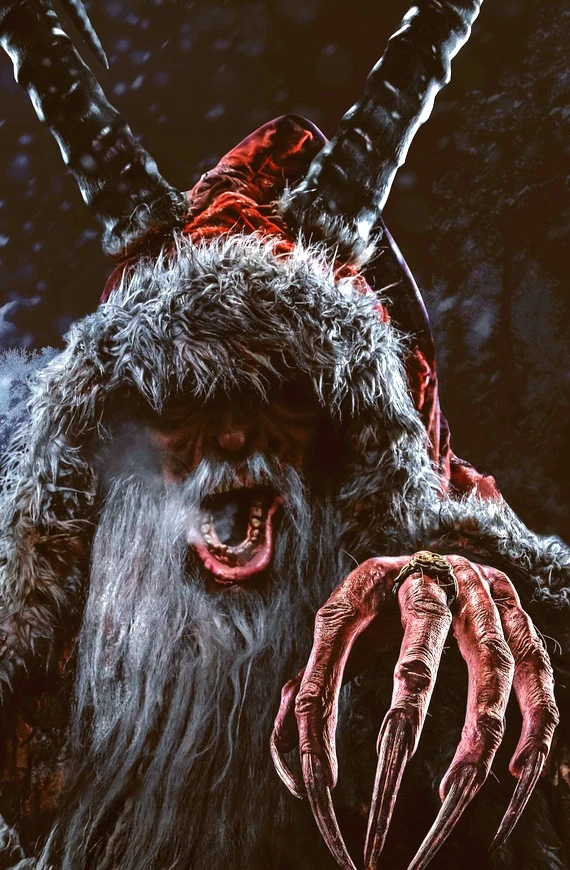
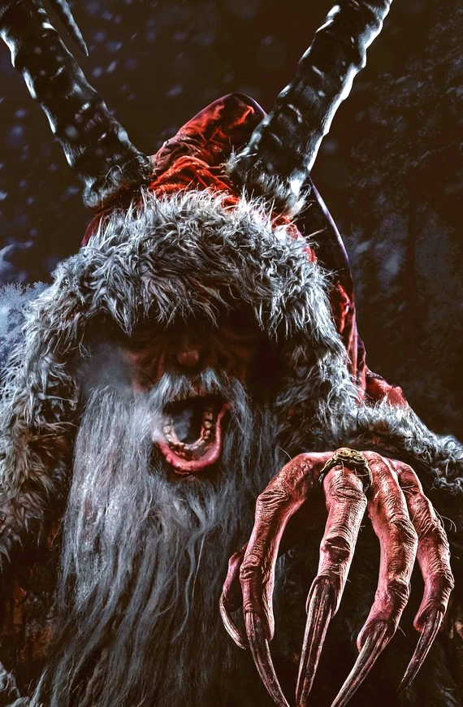
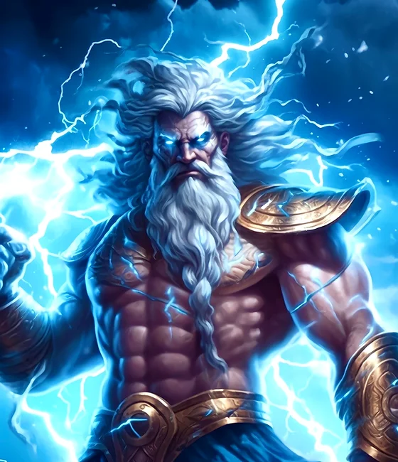
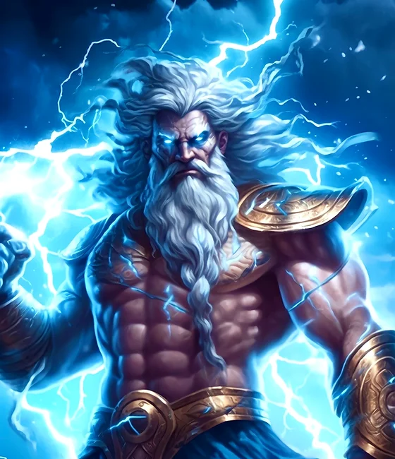

¿Que son los Mitos y Leyendas?
Los Mitos son Relatos protagonizados por dioses, semidioses y criaturas sobrenaturales y
las Leyendas son narraciones que se cuentan de generación en generación,
y no hay nada que compruebe que estas son reales.
 

 

Hombre Lobo
El hombre lobo es probablemente una de las leyendas que más
ha inspirado cuentos y películas en Europa. Cuentan que a
finales del siglo XIX, un hombre con licantropía asesinó a
17 personas. La explicación que él mismo dio es que por las
noches, se transformaba inevitablemente en un lobo cuya
necesidad insaciable era asesinar. En otra versión, de
origen guaraní, existe un humano de aspecto desgarbado y
olor desagradable que se transforma en lobo durante las noches
de luna llena, y se dedica a atacar granjas y buscar carroña.

Krampus
Personaje popular en el este de Europa, que ha sido descrito
como mitad cabra, mitad demonio: tiene un par de cuernos gigantes
, patas muy grandes y un cuerpo peludo. Cada navidad, Krampus viene
a sancionar a los niños que se han portado mal; en contraste con
San Nicolás, Santa Claus o Papa Noel, que viene a premiar a quienes
han sido muy educados. Se trata de un persona cuyo origen está
vinculado a la cultura religiosa anterior al cristianismo.
La Llorona
La Llorona es una leyenda de origen latinoamericano, especialmente popular
en México. La versión más difundida cuenta la historia de una mujer que había
sufrido el rechazo de su marido, y ella, en señal de despecho, asesinó a sus
hijos. La culpa la hace regresar por las madrugadas en la forma de un fantasma
que grita “¡Ay mis hijos!”.
Otras versiones cuentan que se trata de una representación de La Malinche, mujer que
ejerció como traductora e intérprete de Hernán Cortés durante “la conquista” de América.
En este caso, el grito de sufrimiento tiene que ver con que algunas versiones del proceso
de colonización, han atribuido injustamente a la Malinche la responsabilidad sobre lo ocurrido.
Robin Hood
También conocido como el “príncipe de los ladrones”, Robin Hood
es de los personajes ingleses más conocidos en las leyendas de
la cultura occidental. Su historia se ha inspirado en distintos
personajes, aunque uno de los más mencionados es Ghino di Tacco,
héroe italiano de siglo XIII. Los registros escritos sobre Robin
Hood se han ubicado desde el siglo XIII, aunque ganó popularidad
a partir del siglo XV.
Zeus
Zeus es el dios del cielo y del trueno, el más importante de los dioses olímpicos.
Se le considera "padre de dioses y hombres", tras su victoria definitiva sobre
los Titanes y demás fuerzas primitivas. Con él acaba la "maldición" del llamado mito
de sucesión. Es el último de los hijos de Crono y Rea.
Nessie, el monstruo del Lago Ness
Mejor conocida como “El monstruo de Lago Ness”, esta leyenda forma parte del folclore
escocés y cuenta la historia de una criatura gigante con apariencia prehistórica y similar
a los plesiosaurios, que apareció por primera vez en el siglo XVI en el Lago Ness,
pero que ha sido vista incluso en épocas recientes.
La leyenda retomó fuerza cuando aseguraron verlo en el año de 1933, lo que ha inspirado
distintas películas y mantiene en suspenso a quienes visitan el lago. La historia explica
que los bosques escoceses, por ser una región inhóspita y de difícil acceso para el ser humano
, puede contener misterios en forma de animales prehistóricos que han permanecido ocultos y
relativamente protegidos de la degradación a la que nuestra especie ha sometido a muchos entornos naturales.
El molino de sal
Está leyenda nórdica cuenta que hace muchos años existía un gigante que tenía un molino mágico.
El molino era pequeño y podía producir sal. Un día, el gigante se lo regala a una mujer viuda y
a su pequeña hija. Ambas trabajan con el molino y obtienen tanta sal que pueden venderla al pueblo.
Desafortunadamente un duende, celoso del molino, lo roba y lo arroja al mar. Y por está razón el agua del mar es tan salada.
Tanabata
En esta leyenda japonesa, Orihime (que significa princesa que teje) era hija de de Tentei,
el señor del Cielo. A este último le encantaba la ropa que Orihime tejía; pero ella, en cambio,
se encontraba desanimada porque gracias a su duro trabajo, no había tenido la oportunidad de enamorarse.
Tentei, preocupado, le presenta a Hikoboshi, de quien se enamoró perdidamente. Al casarse,
ambos dejaron de cumplir con los mandatos de Tentei, con lo cual el señor del Cielo termina por separarlos.
Ante las lágrimas de Orihime, Tentei les permitió encontrarse al séptimo día,
una vez terminadas sus responsabilidades (por eso el nombre de Tanabata,
que significa “Noche del séptimo”). Pero para esto tenían que atravesar un río donde no había puente.
Ella lloró tanto que una bandada de urracas se acercó para hacer de puente con sus alas. Actualmente,
existe un festival en Japón que se llama Tanabata, o Festival de la Estrella. Según la leyenda este es
el día en que los amantes que han sido separados se reencuentran.
El hilo rojo
Cuenta una leyenda corta proveniente de China que hace muchos años, un emperador pidió que fuese a su palacio una reputada bruja para que, mediante sus poderes mágicos, le mostrase con qué mujer se debía casar. La bruja, gracias a sus cualidades, era capaz de ver un larguísimo hilo rojo atado al meñique del emperador, y cuyo otro extremo debería estar el meñique de aquella persona predestinada a ser la futura esposa.
Así, la bruja y el emperador empezaron a rastrear el origen del hilo, hasta que después de viajar durante varias semanas vieron que este llevaba a una campesina pobre vestida con harapos y a cuyos brazos llevaba un bebé cubierto de suciedad. Airado al verse a sí mismo víctima de una broma, el emperador empujó a la campesina, cayéndole el bebé al suelo y dejando una herida en la cabeza de este, y se volvió a palacio tras ordenar el arresto de la bruja.
Muchos años después, tras ser aconsejado por el consejo de sabios, el emperador decidió casarse con la hija de un terrateniente del lugar; al iniciarse la ceremonia de boda y levantar el velo que cubría el rostro de su futura esposa, vio en su frente una cicatriz que le resultaba familiar.